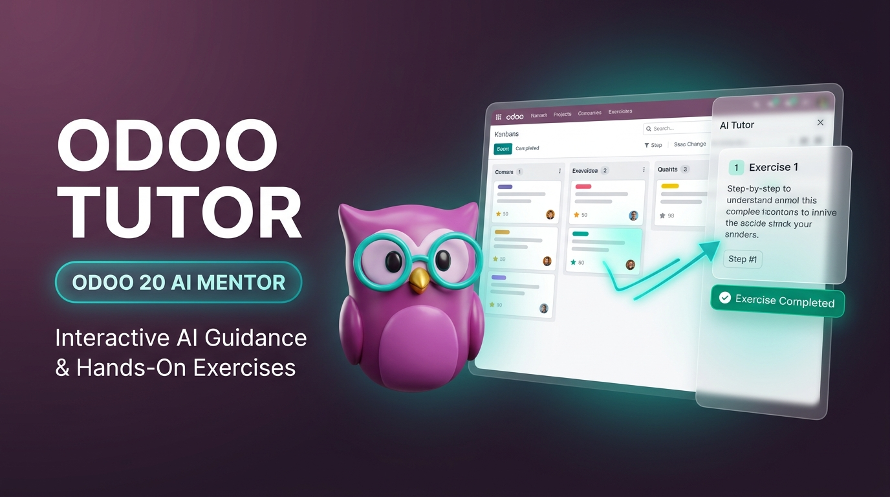
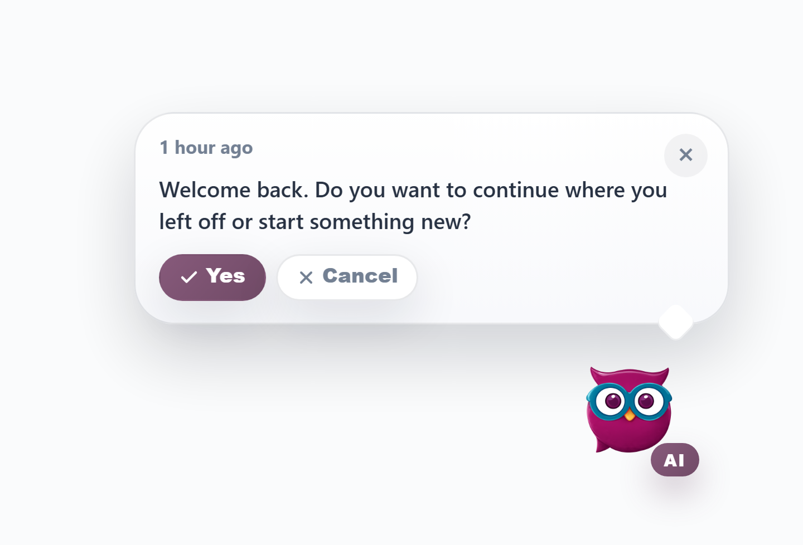

Odoo Tutor is an AI tutor for Odoo 20 that brings contextual guidance into your workspace. Ask questions, practise Project, Sales, Purchase, Inventory and CRM workflows, and follow step-by-step exercise instructions with visual UI spotlights beside your business screens.
For teams learning Odoo, consultants demonstrating workflows and users building confidence with everyday tasks.
Your AI learning companion for Odoo 20
Open the tutoring sidebar without leaving Odoo. Discuss the screen you are working on, ask for an explanation and follow guided exercises supplied by your configured tutor service. The conversation and Odoo workspace stay together, helping you apply guidance as you learn.
Ask in context
Ask about your current task and request a clearer explanation when you need one.
Practise step by step
Start an available exercise, follow its instructions and use contextual hints during supported activities.
Keep learning in Odoo
Work alongside the chat, review the conversation and send feedback on tutor responses.

Odoo Tutor for Odoo 20
See Odoo Tutor in action on Odoo 20
Watch a real end-to-end Odoo 20 guided exercise: from asking Odoo Tutor how to create a B2B sales quotation from scratch, through adding a new customer, configuring order lines, applying a 5% global discount, and reaching “Exercise completed.”
Real Odoo 20 walkthrough: B2B sales quotation guided step by step by Odoo Tutor
Step-by-step CRM exercise guidance right beside your Odoo 20 form view

Interactive launcher prompt to resume or start a new guided exercise
Some catalog names or labels may refer to Odoo 19; these exercises are compatible with Odoo 20. Odoo Tutor, this listing and the supported add-on version are for Odoo 20.
Getting started with Odoo 20
Install and configure the add-on in a demo database. Use sample business data when practising.
Open the tutor and ask which exercises are available for Odoo 20 and your installed modules.
Copy the exact title from the tutor's available exercise list and request that exercise.
Confirm the proposed exercise, then follow the instructions in Odoo. Ask for a hint when you need help.
Choose your first Odoo 20 exercise
Start by copying any of these questions into the tutor to start the matching guided workflow.
Odoo 20 Module
Ask the tutor
Project Task dependencies
How to configure task dependencies in Odoo Project?
Sales B2B sales quotation
How to create a sales quotation from scratch for a new B2B customer?
Purchase Product purchase warnings
How to configure purchase warnings on products?
Inventory Replenishment rules
How to create a replenishment rule?
CRM Activities management
How to configure and manage activities in Odoo CRM?
Keep the conversation going
“Which guided exercises are available for Odoo 20 and my installed modules? Please list their exact names and prerequisites.”
“Start the Odoo 20 exercise called [exact title from your list] and guide me through the first step.”
“Explain the current step and give me a hint about what to do next.”
Use the exact exercise code when requesting a particular workflow. You can also describe what you want to learn in your own words and ask the tutor to suggest a matching exercise.
Local developers: use an HTTPS address
You can run Odoo locally. Odoo.sh is not required. The current add-on requires the Odoo address used in your browser to be HTTPS when it requests a tutor connection ticket. Opening Odoo at http://localhost:8069 or http://127.0.0.1:8069 will fail this check.
Run your local Odoo instance and give it an HTTPS address through a tunnel or a reverse proxy with TLS.
For an ngrok development tunnel, forward your Odoo port, for example ngrok http 8069, after configuring ngrok.
Enable Odoo proxy mode when using a reverse proxy and ensure it forwards the original host and HTTPS scheme.
Set web.base.url to your public HTTPS Odoo URL. You can use web.base.url.freeze=True to prevent automatic changes to that canonical URL.
Configure the tutor service's wss:// WebSocket URL in Odoo Tutor settings.
Open and sign in to Odoo through the HTTPS URL. Setting a public base URL while browsing localhost does not satisfy the current origin check.
The message “Odoo public HTTPS URL is not configured” can appear when a browser uses an HTTP localhost origin, even if a public base URL is already saved. It is raised before the ticket request reaches the service; it does not by itself mean the service is offline.
Keep the tunnel running while you use that address. If your public address changes, update Odoo's canonical URL and check the installation's origin registration with your tutor service administrator. Do not share a development database containing real customer data as a public demo.
What you need before purchase
Odoo 20. The add-on requires the standard Odoo web client; install Project, Sales, Purchase, Inventory and CRM to practise the official demo exercises.
The module provides the Odoo integration. Do not assume unlimited AI usage, a hosted service subscription or third-party provider credits are included in the module purchase. Confirm service availability, trial limits and ongoing charges with the seller before purchase. A fully offline tutor is not provided.
Authentication stays on the server
Odoo registers its installation with the compatible tutor service and stores the resulting installation credential server-side. The browser receives a short-lived connection ticket, not the service credential. Installation ID, service status and WebSocket URL are available in settings. The add-on does not ask customers to enter or manage a shared service API key. Optional AI provider credentials, where supported, are separate from service authentication.
Need help choosing or configuring the module?
Contact juanzamdev@gmail.com to confirm compatibility, the available exercise catalog and service terms before purchasing.